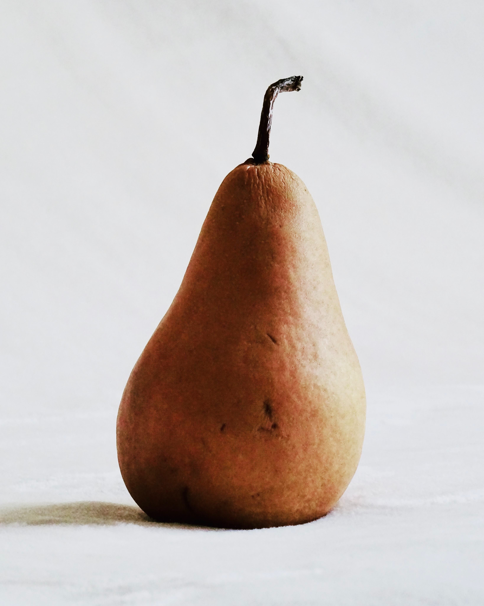
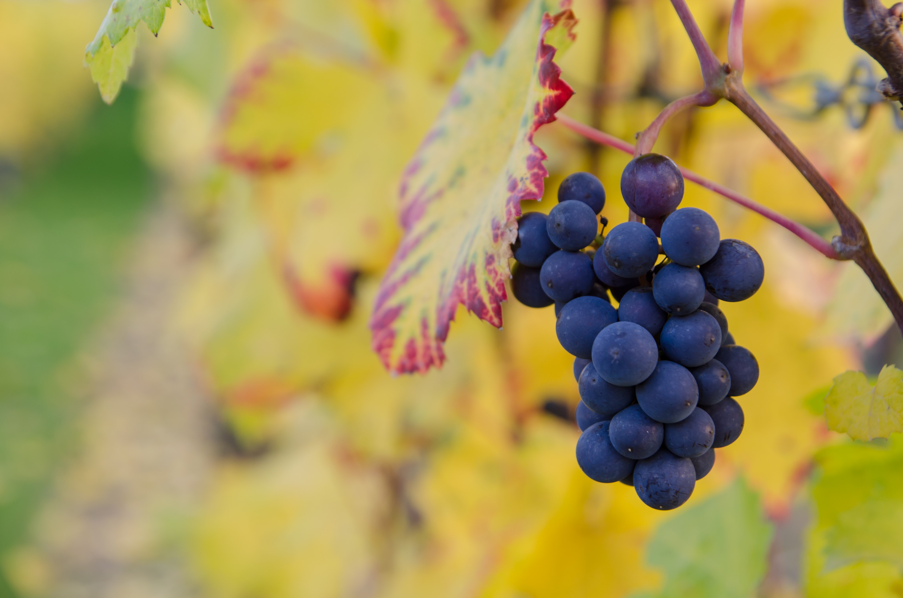
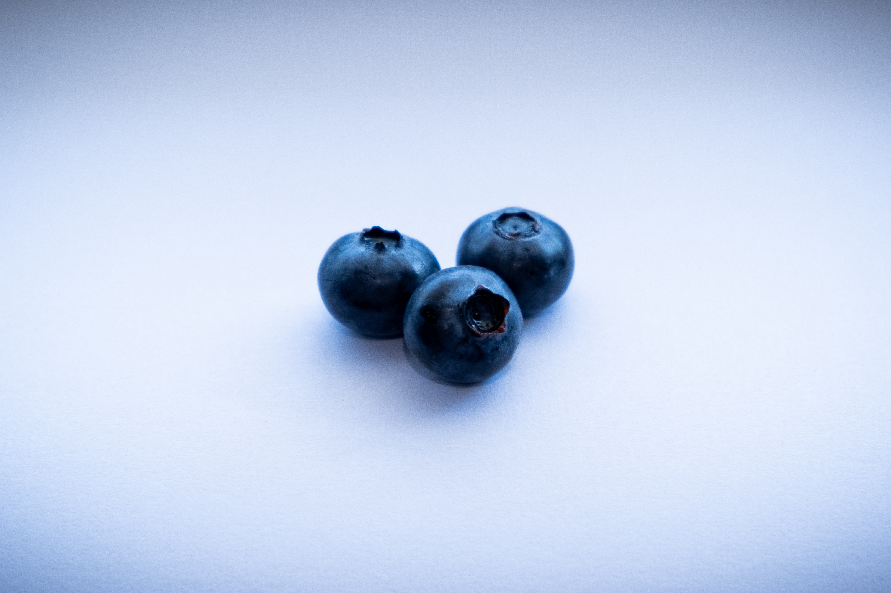
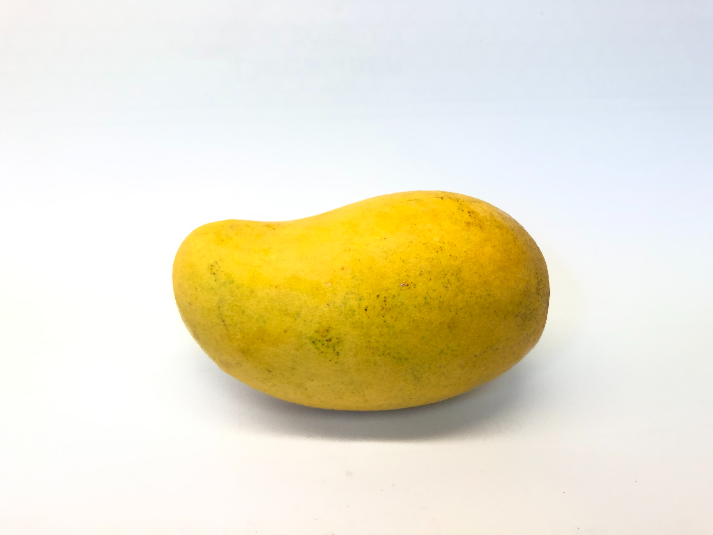
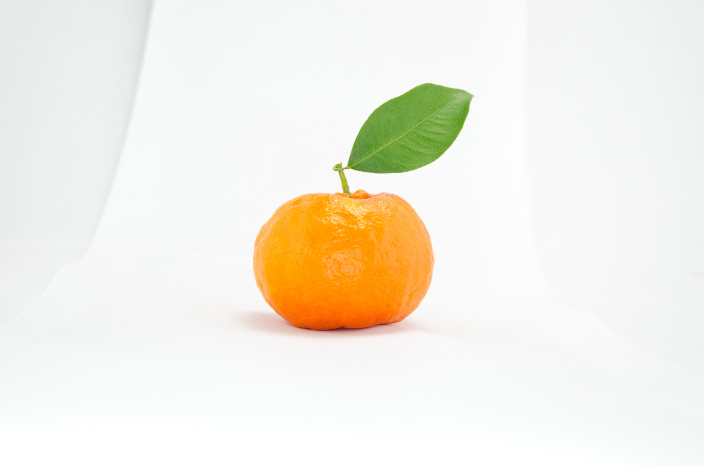
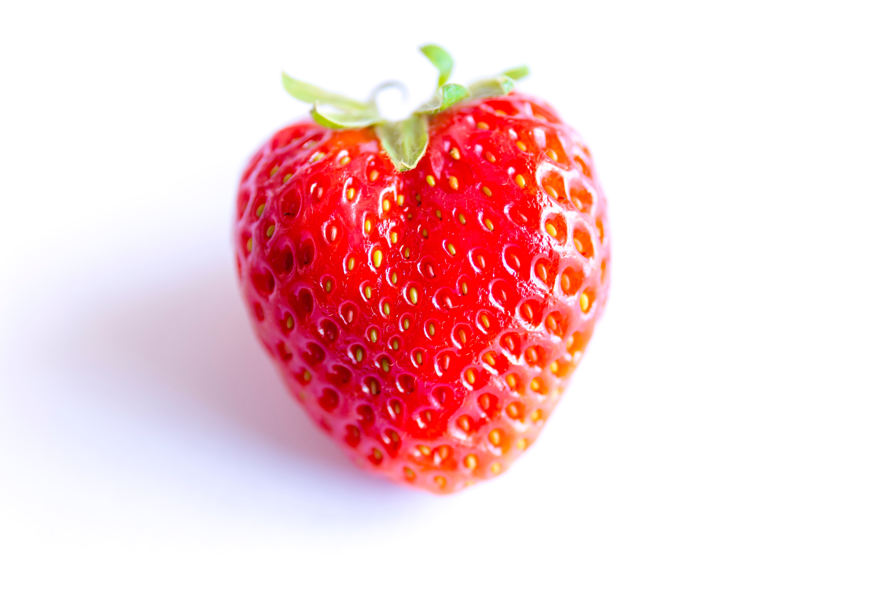
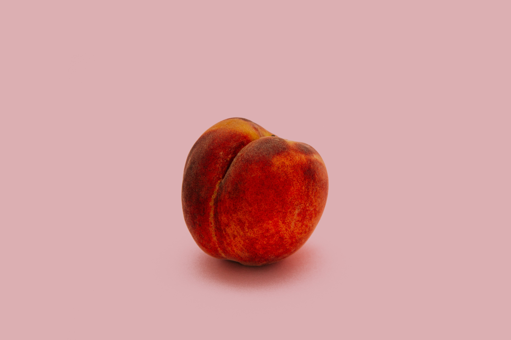

Banana
Price: $0.14

A banana is an edible fruit – botanically a berry – produced by several kinds of
large herbaceous flowering plants in the genus Musa. In some countries, bananas used for cooking may be
called "plantains", distinguishing them from dessert bananas.
Pear
Price: $0.83

The pear tree and shrub are a species of genus Pyrus, in the family Rosaceae, bearing
the pomaceous fruit of the same name. Several species of pear are valued for their edible fruit and
juices while others are cultivated as trees.
Grape
Price: $2.98

A grape is a fruit, botanically a berry, of the deciduous woody vines of the
flowering plant genus Vitis. Grapes can be eaten fresh as table grapes or they can be used for making
wine, jam, grape juice, jelly, grape seed extract, raisins, vinegar, and grape seed oil.
Blueberry
Price: $4.46

Blueberries are perennial flowering plants with blue or purple–colored berries. They
are classified in the section Cyanococcus within the genus Vaccinium. Vaccinium also includes
cranberries, bilberries, huckleberries and Madeira blueberries.
Mango
Price: $0.98

A mango is a juicy stone fruit produced from numerous species of tropical trees
belonging to the flowering plant genus Mangifera, cultivated mostly for their edible fruit. Most of
these species are found in nature as wild mangoes. The genus belongs to the cashew family Anacardiaceae.
Orange
Price: $0.69

The orange is the fruit of the citrus species Citrus × sinensis in the family
Rutaceae, native to China. It is also called sweet orange, to distinguish it from the related Citrus ×
aurantium, referred to as bitter orange. The sweet orange reproduces asexually; varieties of sweet
orange arise through mutations.
Strawberry
Price: $2.38

The garden strawberry is a widely grown hybrid species of the genus Fragaria,
collectively known as the strawberries, which are cultivated worldwide for their fruit. The fruit is
widely appreciated for its characteristic aroma, bright red color, juicy texture, and sweetness.
Peach
Price: $1.64

A peach is a soft, juicy and fleshy stone fruit produced by a peach tree. Peaches
were cultivated in China as far back as 8,000 years ago, with domestication at least 4,000 years ago.